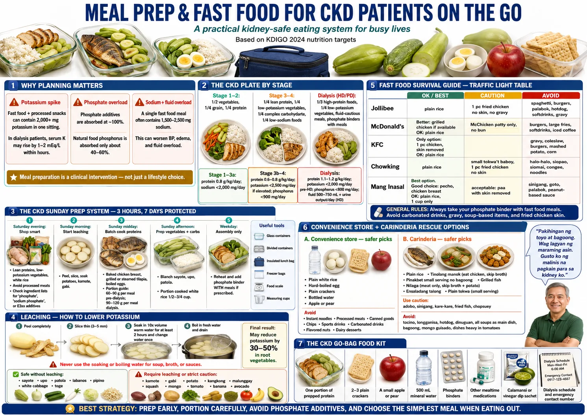
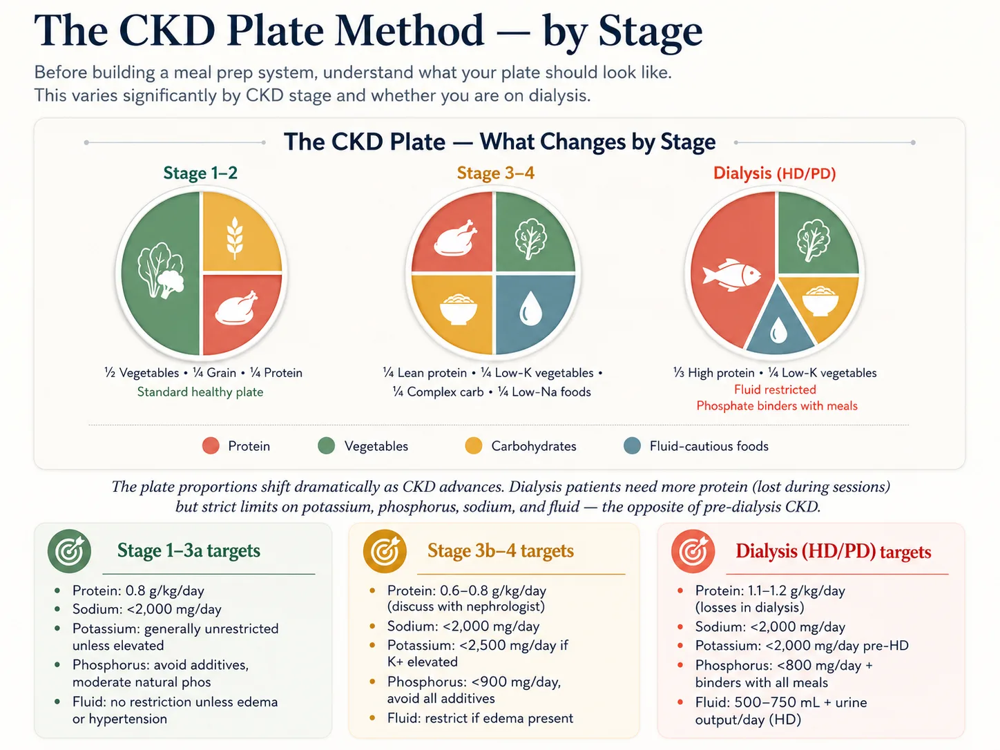
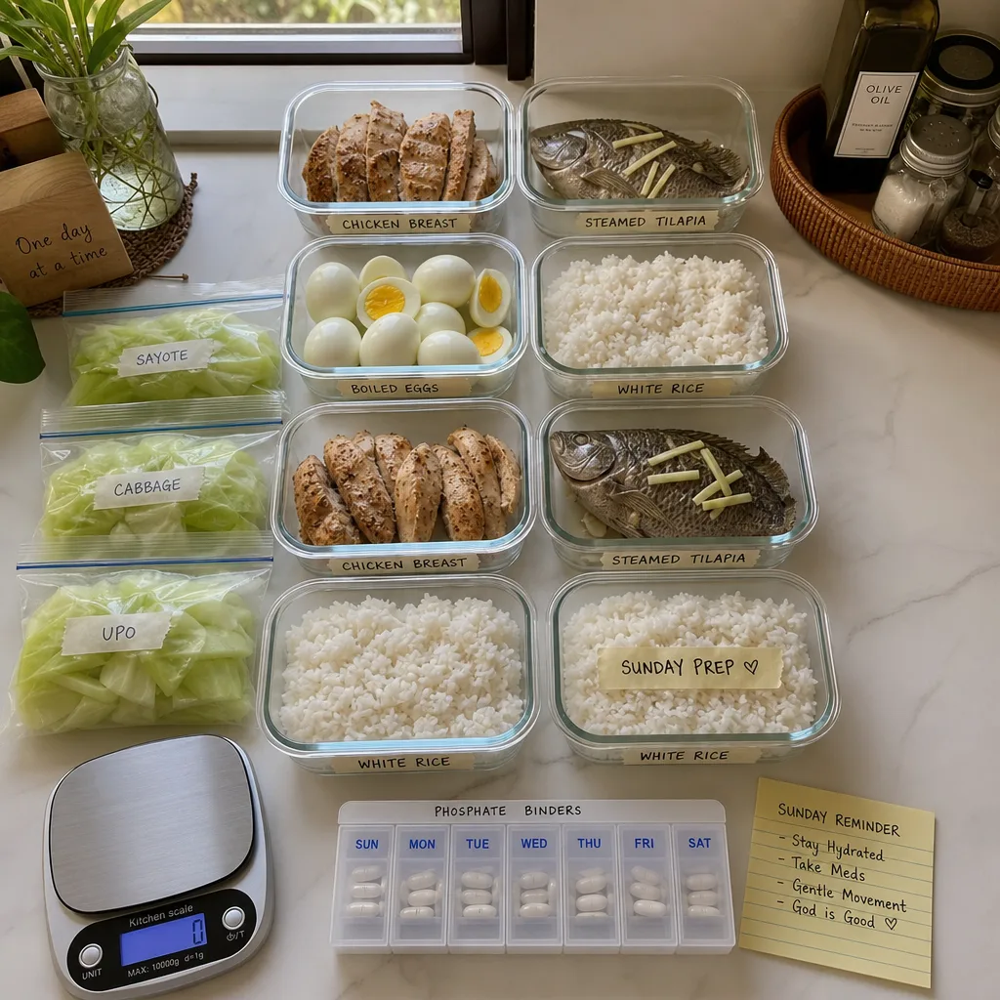
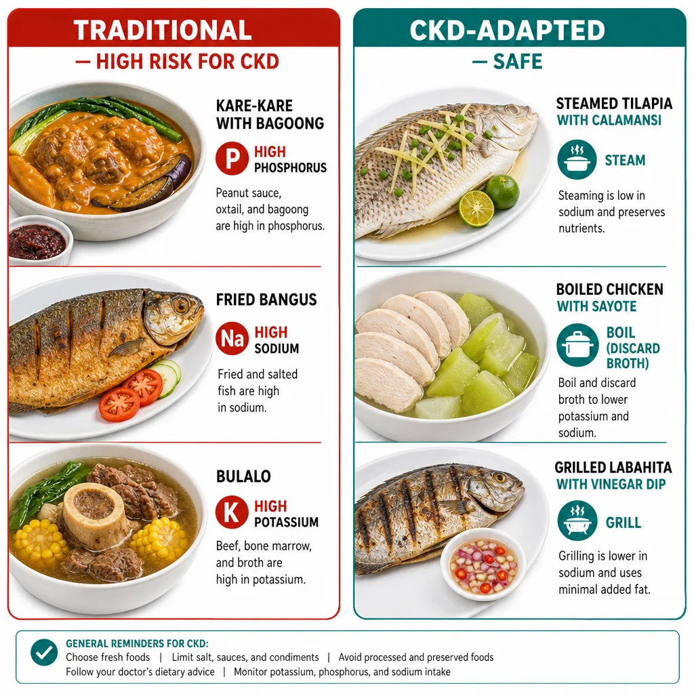
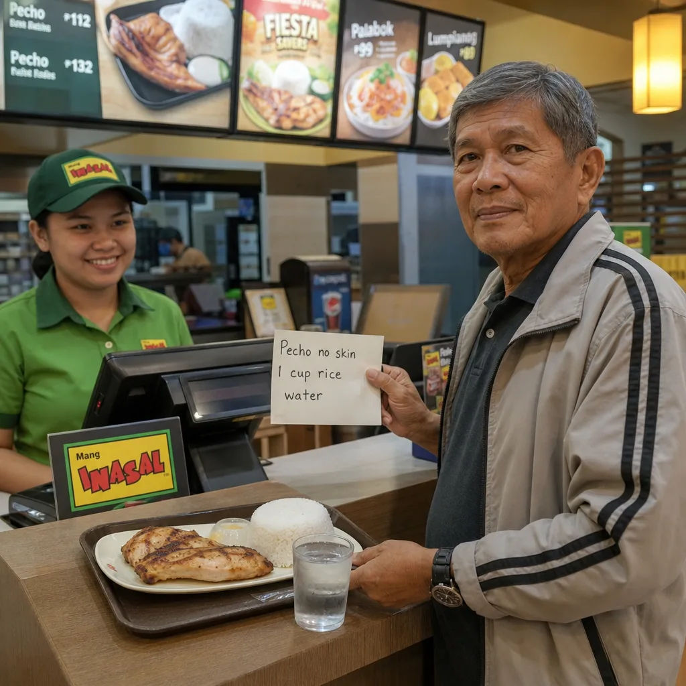
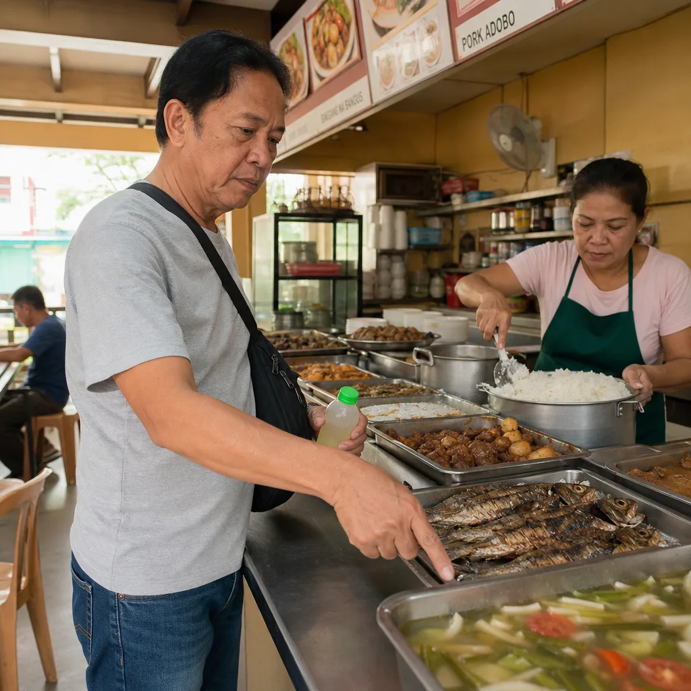

| Meal Prep & Eating Out Guide for CKD · williamriveromd.com | W.G.M. Rivero MD · FPCP · DPSN · · williamriveromd.com · 2026 |
|
Patient Education · CKD Nutrition
Meal Prep & Eating Out with CKD
Filipino kitchen, fast food chains, carinderia, and budget market shopping — all CKD-safe. Covers batch cooking, Jollibee, McDonald's, Chowking, Mang Inasal, turo-turo, and weekly meal planning on ₱800–1,200.
|
🍽️
W.G.M. Rivero MD
FPCP · DPSN Nephrologist
williamriveromd.com
|
½ Plate Vegetables |
¼ Plate Protein |
¼ Plate Carbs |
No Salt At The Table |
Zone 1 · ½ Plate
🥬 Non-Starchy Vegetables
Filipino options: sayote, kangkong, pechay, upo, ampalaya, okra.
How to cook: Boiling or steaming preferred. Leach high-potassium ones (kangkong, pechay) — boil in large water, discard water, cook normally. This removes 30–50% potassium. Why half the plate? Fills you up with low-phosphorus, low-sodium volume. Adds fiber to slow glucose absorption and reduce uremic toxins in CKD. |
Zone 2 · ¼ Plate
🐟 Protein
Best choices: egg (1 pc), bangus (50 g), tilapia (50 g), tofu / tokwa (60 g).
Portion: one palm-sized portion per meal — palm size and pinky-finger thickness. Avoid: processed meats (tocino, longganisa, hotdog, spam) — all very high in sodium and phosphate additives. Cooking: Steam, boil, or sauté with canola oil and garlic. No marinades with toyo or patis. |
Zone 3 · ¼ Plate
🍚 Carbohydrates
Preferred choices: white rice (lowest phosphorus and potassium of all staples), cassava, kamote, gabi.
Why white rice? Preferred over bread — bread usually contains sodium and phosphate additives. White rice is the safest staple for CKD/dialysis. Role: Carbohydrates meet calorie needs. Without enough carbs, the body burns protein for energy, worsening kidney workload. Do NOT skip rice — eating too little leads to malnutrition in CKD. |
The CKD plate is similar to a regular Filipino plate but with smaller protein portions, more vegetables, and zero added condiments. You do not need separate meals from the family — just adjust your portion of the shared protein dish and skip the patis/toyo on the table. Cook the protein and vegetables the same way for everyone; your plate simply has more vegetables and a smaller scoop of the shared ulam.
| For educational use only. This guide does not replace individualized dietary advice from your physician or dietitian. References: KDIGO 2024 CKD Guidelines · FNRI Philippine Food Composition Tables 2023. | williamriveromd.com Page 1 of 8 · williamriveromd.com/guides/meal-prep-fastfood-ckd |
| Meal Prep & Eating Out Guide for CKD · williamriveromd.com | W.G.M. Rivero MD · FPCP · DPSN · williamriveromd.com · 2026 |

| For educational use only · Not a substitute for individualized medical advice · williamriveromd.com | williamriveromd.com Page 2 of 8 |
| Meal Prep & Eating Out Guide for CKD · williamriveromd.com | W.G.M. Rivero MD · FPCP · DPSN · williamriveromd.com · 2026 |

| For educational use only · Not a substitute for individualized medical advice · williamriveromd.com | williamriveromd.com Page 3 of 8 |
Sunday Batch Cooking · CKD-Safe Cooking Methods Prepare once, eat safely all week |
Page 4 of 8 · williamriveromd.com |
| Task | What To Prepare | Time | Notes |
|---|---|---|---|
| Batch 1 | 3 cups dry rice (yields ~9 cups cooked) | 30 min | Portion in ½ cup containers; label Monday–Saturday; refrigerate up to 5 days |
| Batch 2 | 2 cups cassava + 3 kamote (boiled) | 25 min | Peel, cube, boil in large water, drain — boiling removes potassium; use as calorie boosters daily |
| Batch 3 | 6 eggs (hard-boiled) | 15 min | 1 egg per day for 6 days; store in shell until needed; do not add salt when boiling |
| Batch 4 | 300 g bangus portioned (50 g each = 6 portions) | 20 min | Marinate in calamansi only (no toyo, no salt); place in individual bags and freeze for the week |
| Batch 5 | Leach vegetables (kangkong, pechay, sayote) | 2 hrs soak + 10 min boil | Soak sliced vegetables 2 hrs, discard soak water; boil 10 min in fresh water, discard again; store blanched — removes 30–50% potassium |
| Batch 6 | Tofu (tokwa): press and marinate in calamansi-garlic | 10 min active | Press out water with a heavy plate; cut into cubes; marinate overnight in fridge; fry fresh each day in a small amount of canola oil |
Total active time: approximately 2 hours on Sunday afternoon. This eliminates daily cooking decisions and makes it far easier to stay within CKD targets — you simply reheat and assemble your plate each day.
🟢 Boiling
Leaches potassium and phosphorus from both meat and vegetables into the cooking water. Always discard the cooking water — never use as sabaw. The most important CKD cooking technique for managing potassium.
|
🟢 Steaming
Preserves nutrients without added sodium. Best for fish (bangus, tilapia, galunggong) and leafy vegetables. No leaching effect, but adds zero sodium, zero phosphate additives, and no additional potassium.
|
🟢 Sautéing with Oil
Adds needed calories — CKD patients often struggle to eat enough. Use canola or coconut oil. Sauté vegetables in garlic and oil after leaching. No butter, no margarine (both contain sodium). Safest way to make kangkong ginisa.
|
🔴 Street Food Frying Oil
Reused, degraded oil may carry hidden sodium and phosphate additives from previously fried processed foods. Avoid kamote-Q, fishball, and street-fried items where oil source is unknown.
|
🔴 Grilling with Marinade
Commercial marinades (inasal mix, BBQ sauce, teriyaki) contain 600–1,200 mg sodium per serving. Use homemade calamansi-garlic-ginger marinade only. Inasal without skin and without commercial marinade is acceptable.
|
🔴 Stewing with Broth Cubes
Knorr and Maggi broth cubes contain 950+ mg sodium each — nearly the entire daily sodium target for CKD in one cube. Use fresh ginger, garlic, and onion as a broth base. Tomato base (no patis) is also acceptable.
|
| KDIGO 2024 CKD Guidelines · FNRI Philippine Food Composition Tables 2023 · Educational use only. | williamriveromd.com · Page 4 of 8 |
| Meal Prep & Eating Out Guide for CKD · williamriveromd.com | W.G.M. Rivero MD · FPCP · DPSN · williamriveromd.com · 2026 |

| For educational use only · Not a substitute for individualized medical advice · williamriveromd.com | williamriveromd.com Page 5 of 8 |
| Meal Prep & Eating Out Guide for CKD · williamriveromd.com | W.G.M. Rivero MD · FPCP · DPSN · williamriveromd.com · 2026 |

| For educational use only · Not a substitute for individualized medical advice · williamriveromd.com | williamriveromd.com Page 6 of 8 |
Fast Food & Carinderia Ordering Guide What to order, what to skip, what to ask for |
Page 7 of 8 · williamriveromd.com |
| Chain | Order This ✓ | Skip This ✗ | Ask For |
|---|---|---|---|
| Jollibee | Chickenjoy (1 pc, remove skin before eating) + plain steamed rice (no gravy) | Palabok (2,100 mg Na), chicken gravy (650 mg Na/serving), hot fudge sundae, pineapple juice | "No salt on rice, extra rice please, do you have calamansi?" |
| McDonald's | McChicken patty only (no bun, no sauce) + steamed corn + plain rice | Big Mac (1,040 mg Na), French fries (300 mg Na), apple pie (crust has sodium), regular soda | "No sauce, no pickles, no ketchup, plain water only" |
| Chowking | Chao fan (½ serving, request less sauce) + plain tofu soup (if no patis base) | Asado (high Na), wonton soup (high-Na broth), halo-halo (high potassium), lauriat sets | "Less sauce, no MSG, smaller portion, is the soup made with broth cubes?" |
| Mang Inasal | Plain rice (2 cups) + 1 pc chicken inasal (remove skin, request no basting) | Pork BBQ (900 mg Na/stick), chicken soup/sabaw (high-Na broth), extra basting oil (contains patis) | "No bagoong, no patis, no basting, extra plain rice, calamansi on the side" |
| Goldilocks | Plain pandesal (1 pc, no filling) as occasional snack | Ensaymada (high butter/sodium), leche flan (high phosphorus from egg yolks + condensed milk), polvoron (phosphate additives) | — (simply choose plain pandesal only; no modifications needed) |
Jollibee chicken soup, McDonald's soup, and Chowking wonton soup are all made with high-sodium commercial broth — typically 800–1,400 mg sodium per bowl. Mang Inasal chicken sabaw contains patis. Ask for plain water only. Bring your own water from home within your prescribed fluid allowance.
| KDIGO 2024 · FNRI 2023 · Nutrient data from chain-published nutrition facts (Philippines) · Educational use only. | williamriveromd.com · Page 7 of 8 |
| Meal Prep & Eating Out Guide for CKD · williamriveromd.com | W.G.M. Rivero MD · FPCP · DPSN · williamriveromd.com · 2026 |

| For educational use only · Not a substitute for individualized medical advice · williamriveromd.com | williamriveromd.com Page 8 of 10 |
| Meal Prep & Eating Out Guide for CKD · williamriveromd.com | W.G.M. Rivero MD · FPCP · DPSN · williamriveromd.com · 2026 |

| For educational use only · Not a substitute for individualized medical advice · williamriveromd.com | williamriveromd.com Page 9 of 10 |
Budget Market Shopping · Label Reading · Dialysis Go-Bag Weekly PHP 800–1,200 CKD shopping guide · Reading phosphate labels · What to bring to every dialysis session |
Page 8 of 8 · williamriveromd.com |
| Item | Quantity | Est. Cost | CKD Notes |
|---|---|---|---|
| White rice | 2 kg | ₱120 | Staple — lowest potassium and phosphorus of all staples; buy in bulk for savings |
| Bangus (fresh, whole) | 500 g | ₱120 | Ask vendor to debone; portion into 50 g serving bags at home; freeze |
| Eggs (large) | 1 tray (30 pcs) | ₱180 | Main protein source; 1 egg = complete protein; hard-boil in batches of 6 |
| Firm tofu (tokwa) | 4 blocks | ₱80 | Rinse and press before cooking; marinate in calamansi-garlic; safe in moderate amounts |
| Kamote (sweet potato) | 1 kg | ₱60 | Calorie booster; always boil and drain (leach) before eating to remove potassium |
| Cassava | 500 g | ₱40 | Lowest protein of all root crops — excellent for meeting calorie targets without extra protein load |
| Sayote | 3 pcs | ₱30 | Low potassium, low sodium, very versatile; use in all dishes in place of higher-K vegetables |
| Kangkong | 2 bundles | ₱30 | Leach before cooking (soak 2 hrs, boil and discard water); then sauté in canola oil + garlic |
| Canola or coconut oil | 500 ml | ₱90 | Essential for meeting calorie needs; oil adds calories with no potassium or phosphorus |
| Calamansi | 1 bag (20 pcs) | ₱30 | Replaces all condiments at every meal; carry 2–3 in a bag when eating out |
| Total (one CKD patient, one week) | ~₱780 | Adjust quantities upward for family cooking; covers 3 meals/day for 6 days | |
Tocino, longganisa, hotdog, and spam are high in sodium, phosphate additives, and preservatives — regardless of brand or price. They have no place in a CKD diet at any budget level. The ₱120 spent on bangus gives more protein, less sodium, and less phosphorus than any processed meat at the same price. One hotdog contains ~600 mg sodium and phosphate additives that are 100% absorbed; one 50 g bangus fillet contains ~60 mg sodium and natural phosphorus (only 40–60% absorbed).
|
🚫 Red Flag Ingredients — Put It Back
Any ingredient containing "PHOS" is an additive phosphorus source:
· Sodium phosphate · Potassium phosphate · Pyrophosphate · Polyphosphate · Tricalcium phosphate · Disodium phosphate These are 100% absorbed (vs. 40–60% for natural phosphorus in whole food). Added to processed meats, fast food, instant noodles, flavored drinks, and processed cheese to extend shelf life and improve texture. |
✅ The Safest Label Reading Rule
If the ingredient list has more than 5 items and includes anything ending in "-ate" or "-ite" — put it back.
Examples to avoid: sodium nitrate, potassium sorbate, disodium phosphate, calcium silicate. Safest packaged options: plain canned tuna in water (no added salt), plain oats, unsalted crackers with short ingredient lists, dried beans (leach before cooking). |
🧴 MedicationsPre-portioned phosphate binders and any pre-dialysis medications in a labeled pill box. Bring enough for the session plus one extra dose. |
🍠 CKD SnackBoiled cassava (50 g) or boiled kamote (50 g) — low-sodium, low-phosphorus snack for during or after dialysis. Do NOT bring processed snacks or chips. |
💧 Water Bottle (Marked)Personal water bottle marked with your daily fluid allowance. Note the fill line — this is the total for the entire day including water in food. Do not share the bottle. |
📋 Medical Records FolderMedication list, latest lab results (creatinine, potassium, phosphorus, CBC), BP log, and dialysis access site care record. Keep in one folder — updated monthly. |
🧦 Extra SocksDialysis centers are often cold. Extra socks and a light blanket prevent discomfort. Cold extremities can affect blood pressure during the session. |
🍋 Calamansi Pack2–3 calamansi in a small zip-lock bag. Replaces patis and toyo if you eat near the dialysis center or are offered food during the session. |
📱 Emergency Contact (Written)Emergency contacts and nephrologist's clinic number on paper — not just in your phone. If your phone dies during the session, staff need paper backup. |
🩺 BP LogHome BP readings from the past week. Your nephrologist needs this to adjust dry weight and antihypertensive doses. Record morning and evening BP daily. |
| Reference: KDIGO 2024 · For educational use only · Confirm all dietary targets with your nephrologist and renal dietitian · williamriveromd.com · 2026 | williamriveromd.com Page 8 of 8 · williamriveromd.com/guides/meal-prep-fastfood-ckd |